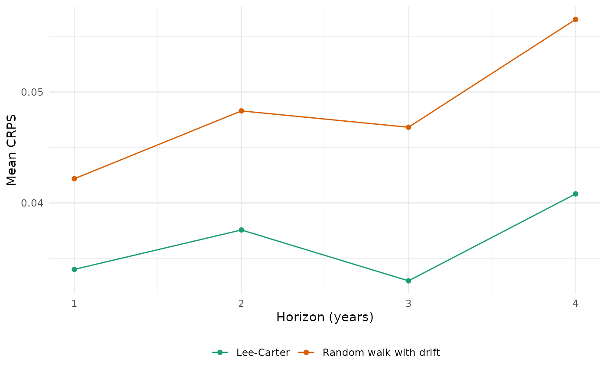

mt_plot_tucker(): the factor matrices of atucker3()fit (age, period and stratum modes), one panel per mode and one line per factor; signs are arbitrary.mt_plot_shares(): shares of each cause in the deaths over the selected ages, observed and forecast (median and 95% interval), from a forecast with a cause variable among the strata (for example fromcause_shares()).mt_plot_scores(): mean score of each model by horizon or age from a backtest, or one bar per model (by = "model");targetselects rates or a derived quantity scored by the backtest.
Arguments
- fit
A fitted
tucker3()model.- draws
An mt_draws object whose strata include
var.- var
Stratum variable with the causes (default: the variable with shared exposures in the hierarchy of a reconciled forecast).
- total_level
Level of
varfor all causes (left out of the shares; default: its total in the hierarchy).- ages
Age labels summed over (default all).
- groups
Panels to show: combinations of the other stratum variables joined by "." (for example
"female.Q1"; default all).- causes
Levels of
varto show (default all; shares are always computed among all levels).- backtest
An
mt_backtest()result.- metric
Score column, for example
"crps","wis"or"ae".- by
"horizon","age"or"model".- target
"rate","life_expectancy"or"asr"(seemt_backtest()).
Examples
if (requireNamespace("ggplot2", quietly = TRUE)) {
x <- mt_example(deaths = "single", years = 2000:2019)
mt_plot_tucker(mt_fit(tucker3(), x))
bt <- rbind(mt_backtest(rwd(), x, origins = c(2012, 2014), h = 4, n_draws = 50),
mt_backtest(lee_carter(), x, origins = c(2012, 2014), h = 4, n_draws = 50))
mt_plot_scores(bt)
}
